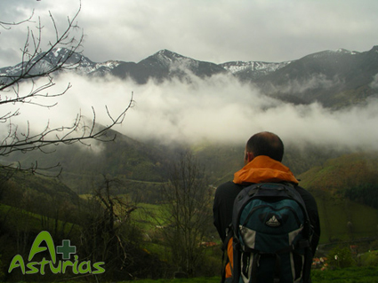
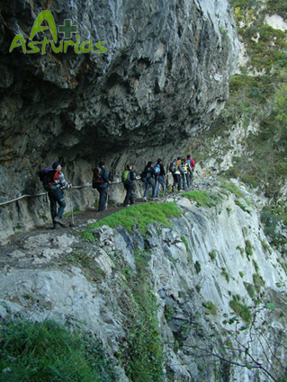

Histoire, nature, traditions…… s’unissent en ce parcours au cœur des Asturies.

Proaza:
- L’enclos des ours : Paca et Tola, deux ourses brunes cantabriques sont les protagonistes de cette municipalité.
- La Maison de l’Ours.
- Tour médiévale du Champ.
Teverga:
- Parc de la Préhistoire : il contient la collection de reproductions de peintures la plus remarquable de l’art rupestre européen.
- Collégiale de San Pedro de Teverga, bijou de l’art roman primitif. Ici on peut trouver les cadavres momifiés du premier marquis de Valdecarzana et de son fils, connus comme les momies de Teverga.
- Grotte Cueva Huerta.
Quirós:
- Musée ethnographique.
- L’if de Bermiego, Monument Naturel. Il est considéré l’un des ifs les plus anciens d’Europe.
- La richesse picturale des greniers à grain (hórreos) de Quirós, ses mythes et légendes.
- Moulins de Corroriu où l’on meule l’épeautre, variété de montagne du blé, avec AOC.

Lieu Trail
<